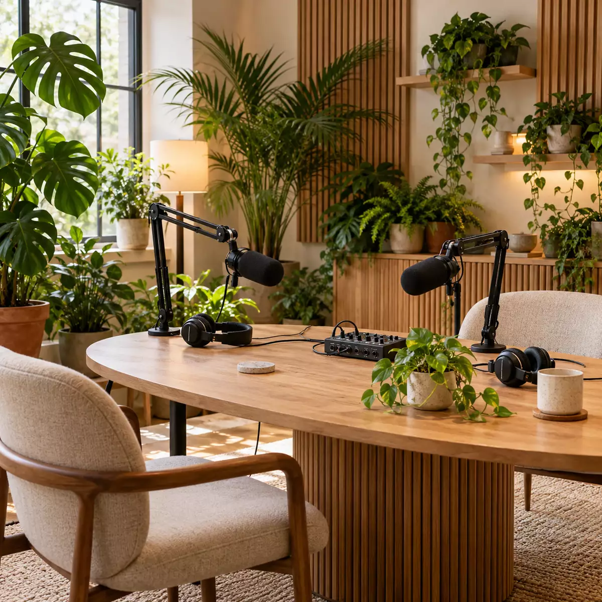

How to make any room sound good for a podcast
You can have the best microphones money can buy and still end up with a podcast that sounds like it was recorded in a bathroom. Nine times out of ten, the problem isn’t the kit. It’s the room.
The good news is that you don’t need a professional studio to sound professional. Most offices, meeting rooms and spare rooms can sound great with a bit of planning and a few things you probably already own. Here’s how we approach it when we record on location.

What makes a room sound bad?
Two things cause most problems: echo and noise.
Echo (or “reverb”) happens when your voice bounces off hard, flat surfaces like walls, windows, desks and wooden floors, and reaches the microphone a fraction of a second after your voice does. It makes speech sound distant, hollow and harder to follow. Empty rooms, glass meeting rooms and kitchens are the worst offenders.
Noise is everything else the microphone picks up: air conditioning, traffic, a humming fridge, people chatting in the corridor, a phone buzzing on the table. You stop noticing these sounds after a few minutes. Your listeners won’t.
1. Choose the right room
The easiest fix happens before you set anything up. If you have a choice, go for:
- A smaller room rather than a large, empty one
- A room with carpet, curtains, sofas or bookshelves
- Somewhere away from kitchens, lifts, toilets, busy corridors and main roads
- A room you can book for the whole session, so nobody walks in halfway through
A cosy room that feels a bit cluttered will almost always sound better than a sleek boardroom with glass walls.
2. Soften the hard surfaces
Sound bounces off hard surfaces and gets absorbed by soft ones. You don’t need acoustic foam to make a difference. Look around for:
- Rugs on hard floors, especially under the table
- Curtains drawn across windows
- Upholstered chairs and sofas rather than hard plastic seats
- Bookshelves, plants and cushions to break up flat walls
- Coats or blankets draped over chairs just out of shot
Rooms like the one in the photo work well for exactly this reason. The rug, fabric chairs, slatted wooden panels and plants all soak up or scatter sound, so voices stay close and warm instead of bouncing around.
3. Cut the background noise
Before you start, stand in the room, stay quiet for 30 seconds and listen. Then deal with what you hear:
- Turn things offAir conditioning, fans, projectors and anything that hums. Just remember to turn them back on afterwards.
- Silence phonesNot just on vibrate: buzzing on a table is surprisingly loud. Put them on silent and away from the mics.
- Warn people nearbyA sign on the door and a quick word with colleagues next door saves a lot of retakes.
- Close windows and doorsEven a quiet street adds a low rumble you’ll hear in every pause.
4. Get the microphones close
This is the single biggest thing you can do. The closer the microphone is to someone’s mouth, the more of their voice it picks up and the less of the room.
With most podcast microphones, aim for about a hand’s width (10 to 15 cm) from the mouth, slightly off to one side so breaths and “p” sounds don’t hit it directly. Boom arms like the ones in the photo make this much easier, because each speaker can have the mic exactly where they need it without leaning in.
Give everyone their own microphone, and keep the distance consistent. If someone leans back halfway through a story, their voice will suddenly sound thinner and further away.
5. Do a proper test
Record a minute or two of everyone talking normally, then listen back on headphones. Listen for:
- Echo or a “hollow” sound
- Hums, buzzes or rumbles in the pauses
- One voice much louder or quieter than the others
- Rustling, tapping or clothing brushing a microphone
Fixing something now takes seconds. Fixing it in the edit takes hours, and some problems can’t be fixed at all.
What editing can and can’t fix
Modern editing tools are impressive. They can reduce a little background hiss, smooth out levels and take the edge off a slightly echoey room. But they can’t rescue a recording made in a big, bare room or with a microphone across the table. Push them too hard and voices start to sound thin, watery or robotic.
The best approach is always to get it right in the room, and let editing do the polishing rather than the rescuing.
Questions about recording rooms
Do I need acoustic foam to record a podcast?
No. Foam panels help, but most rooms can be improved a lot with things you already have: rugs, curtains, sofas, cushions, bookshelves and coats. Getting the microphones close to each speaker makes a bigger difference than any wall treatment.
What is the best room in an office for recording a podcast?
Choose a smaller room with soft furnishings, away from kitchens, lifts, busy corridors and roads. Avoid glass-walled meeting rooms and large empty spaces with hard floors, as they echo.
Can echo be removed in editing?
Editing software can reduce a little echo and background noise, but heavy echo can't be removed cleanly, and trying usually makes voices sound thin or robotic. It's much easier to fix the room before you record.
How close should a podcast microphone be?
For most dynamic podcast microphones, keep it about a hand's width (10 to 15 cm) from the speaker's mouth, slightly off to one side, and at the same distance for the whole recording.
Want us to handle the room?
We bring our RØDE mobile studio to your office, event or venue, choose the best spot, set everything up and sound-check it before you start. Or record at our London studio, where the room is already sorted.
Tell us where you’d like to record and we’ll take it from there.